Q1 has two parts — Part (a) is Transport Layer theory, Part (b) is Security/Cryptography. The transport layer's sole job is converting host-to-host delivery (network layer) into process-to-process delivery using port numbers. Socket address = IP + port.
Three-way handshake sequence numbers — SYN (seq=x), SYN-ACK (seq=y, ack=x+1), ACK (ack=y+1). Below is the diagram, then your full interactive study guide.

- Transport layer = process-to-process delivery via port numbers; Socket address = IP + port
- Attack → CIA: DoS → Availability. Snooping → Confidentiality. Masquerading → Integrity/Authenticity
- Caesar cipher on your name "ARHAM" with key 15 — the Batch-22 paper says "encrypt the name of the student"
- Cipher table format: P letter → P value → + key → mod 26 → C value → C letter. Show every step
TCP congestion control is heavily visual — the cwnd graph is the core of the question. Your job in the exam is to identify the phases and explain what's happening at each event marker.
Hover over any point on the graph to see the exact cwnd, ssthresh, and phase at that RTT.
- Timeout vs 3 dup ACKs: Timeout resets cwnd to 1 (Slow Start). 3 dup ACKs halves cwnd to ssthresh and jumps to Congestion Avoidance — never touches 1 MSS
- ssthresh formula: always cwnd ÷ 2 at the point of the event — not the old ssthresh
- Graph annotation: label every phase region, draw ssthresh as a dashed line, mark each event
- For Q2(b): cipher calculator in the Q1 prep (Cipher Practice tab) — show the full step table. Free marks
Multiplexing and Modulation are pre-mids topics that repeat across every paper — Batch-22 Q3, Mids Q4, Assignment Q2 and Q3. Go to the Numericals tab first — the FDM calculator lets you plug in any values your exam throws at you.
The Batch-22 Mids Q4(b) numerical (20 channels, 5 kHz each, 300 Hz guard) is already solved step-by-step, and the interactive calculator lets you practice with different inputs.
- Guard band formula: always (n−1) guard bands, not n — 10 channels have only 9 gaps between them. Most common arithmetic mistake in FDM
- Noise susceptibility ranking: ASK (highest) → FSK (medium) → PSK (lowest). Examiners ask "why" at C-3 level — not just the ranking
- QPSK efficiency: same bandwidth as BPSK but carries twice the data. Baud rate = data rate ÷ bits per symbol
This is the most numerical question on the paper and a near-direct repeat from Batch-22 Q4. Go straight to the Batch-22 Q4 Solved tab — both sub-questions fully worked with every step shown. Then use the Subnet Calculator to practice on new addresses until the pattern is automatic.
- Block size formula: always 256 − interesting octet of mask. For 255.255.240.0 → block size = 16. Get this wrong and all five subnets are wrong
- The −2 rule: hosts per subnet = 2ʰ − 2. Write this formula explicitly — the examiner awards a mark for it
- Last host address: not .255 in both octets. For /20, last host in subnet 1 is 172.16.15.254 (3rd octet runs to block_size−1)
- Show binary: for Q4(b), write the mask in binary first, then decimal. Examiners at C-6 want to see you derived the mask
This is the highest-value question — both algorithms appeared directly in Batch-22 Q5. Use all three widgets together: step through Dijkstra once watching the graph, then reset and try to predict each D(v) update before pressing Next. If you can fill in the table row before each step reveals it, you're exam-ready.
For Bellman-Ford: in the exam you draw one table per node per round — not one combined table. The four 2×4 grids is the expected format.
- Dijkstra — always show D(v),p(v) format: the predecessor p(v) is half the marks — it proves you can reconstruct the actual path
- Bellman-Ford — show the equation: write D_W(Z) = min{c(W,X)+D_X(Z), c(W,Y)+D_Y(Z)} = min{1+2, 3+3} = 3. One explicit calculation gets method marks even if table has a small error
- Algorithm contrast: link-state vs distance-vector, global vs local knowledge, OSPF vs RIP. One paragraph contrast = 1–2 marks